Overview¶
Menus¶
Wizard¶
The Wizard menu contains all the Wizard information. Display the Wizard License information by clicking on the About tab, display the current version in use of Wizard with the Versions tab.

Note
By clicking on the GitHub tab you can access the Wizard - Pipeline Manager project hosted by Github.
Project¶
The Project menu allows you to manage your projects. You can Create, Open, Merge and set (from the Settings tab) all your projects from this menu.

Note
Updating Wizard may lead to loss connection with your projects. Use the Merge tab to reconnect them.
User¶
The User menu allows you to manage registered users in Wizard. You can create, change, and manage your user Password from this menu.

Settings¶
The Settings menu allows you to setup all softwares to be run under Wizard from the Softwares tab. Customize the interface and the various features of the Wizard UI from the Preference tab. The UI settings are user’s preferences and project-independent.

Note
With wizard you can customize your softwares and work tools. Add path, commands, environment variables and personal scripts from the Softwares tab.
Warning
The softwares settings are linked to a project. When a user connects to a project, he retrieve its software settings. Be careful that all external resources linked to the project are accessible to each user to be used.
Tools¶
The Viewer is a Wizard tool able to read and edit all the “.pref” files in your project folders. They are generated while users are working with Wizard. Wizard use those files to get all users, projects, assets,stages and softwares informations and more. It also adapts its UI according to those preference files.
Danger
Modifying these files can corrupt a whole part of your pipeline, it’s strongly recommended to edit them only with full knowledge.
The Subprocess manager is a tool that isolates and relocates some Wizard tasks. It allows you to keep using Wizard while it performs long and incompressible operations like publish and map conversation, playblast or animation export etc…
The PyWizard tool gives you an access to the application programming interface.

Note
To use Pywizard, refer to the API documentation.
{kind=link}
Outliner¶
The Outliner allows you to create and archive assets and stages. The Outliner is connected to your project. It contains and lists all the scenes and allows an fast and intuitive access to every file of your project. Each user connected to the project will access to the Outliner and its functions. The search function saves time if your project contains a large volume of assets.

Assets¶
The Asset block of the outliner contains all your assets. Divided into four categories: characters, props, vehicles, set, set_dress.

Each created category of asset contains a specific list of stages. They represent the fabrication process of the asset: Design, Modeling, Rigging, Grooming, Texturing, Shading.
Library¶
The Library block contains specific and recurring assets of your project as next: auto Rig, camera_rig, cyclo, fx_setup, gizmo, light_rig, lut, render_graph, render_pass, scripts, sons, stockshot and video. All available and referenceable in your scenes once created and published.
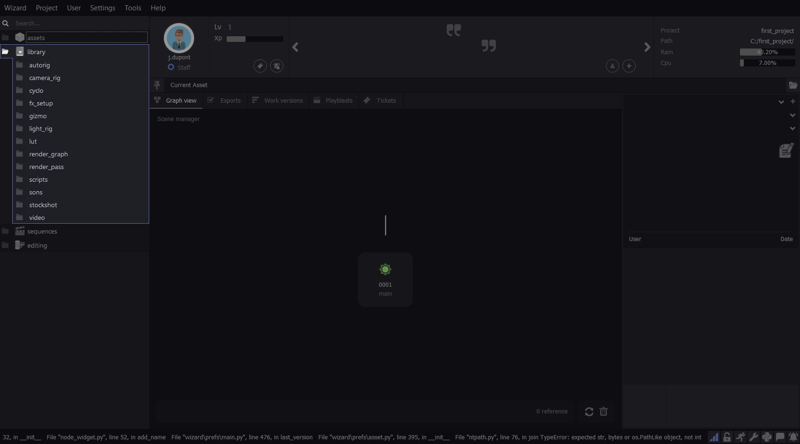{kind=link}
Sequences¶
The Sequences block contains all your animated scenes.Create a technical or definitive sequence, create a shot and set its name and number of frames.
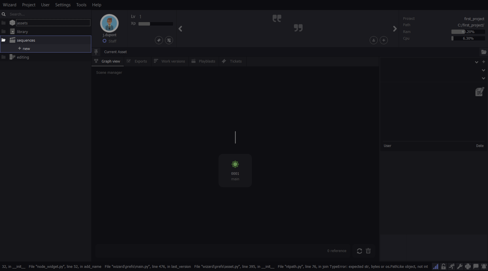{kind=link}
Once a shot is created you can create all the following stages : concept, layout, animation, lighting, cfx, fx, compositing and camera.
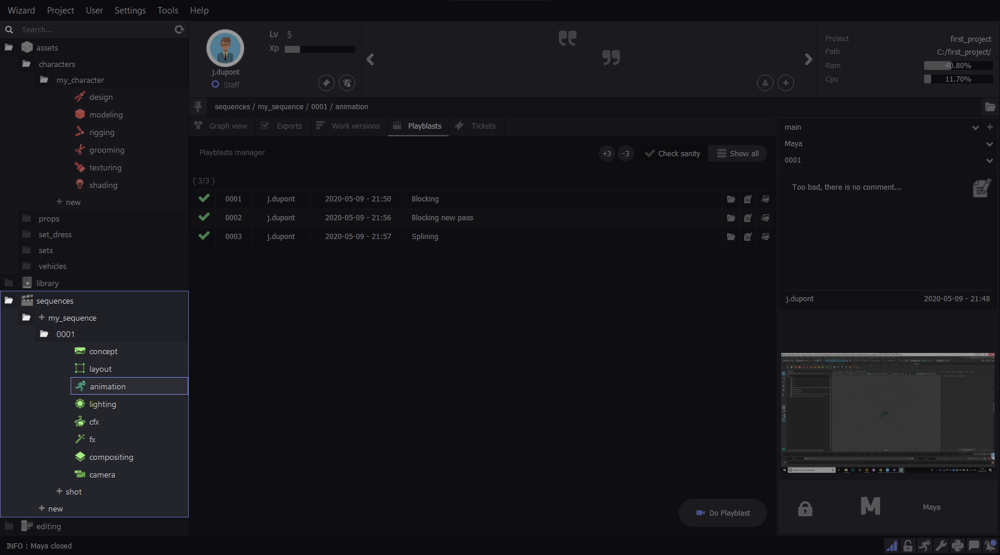{kind=link}
Note
Wizard is able to create the camera stage and build the scene itself if a Camera Rig has already been published from the animation export tool.
{kind=link}
Scene¶
Pin Asset¶
Use the pin icon to lock temporarily your scene. It allows you to drag and drop multiple published asset from the outliner to reference them in the scene. The scene will be highlighted in blue when pinned.
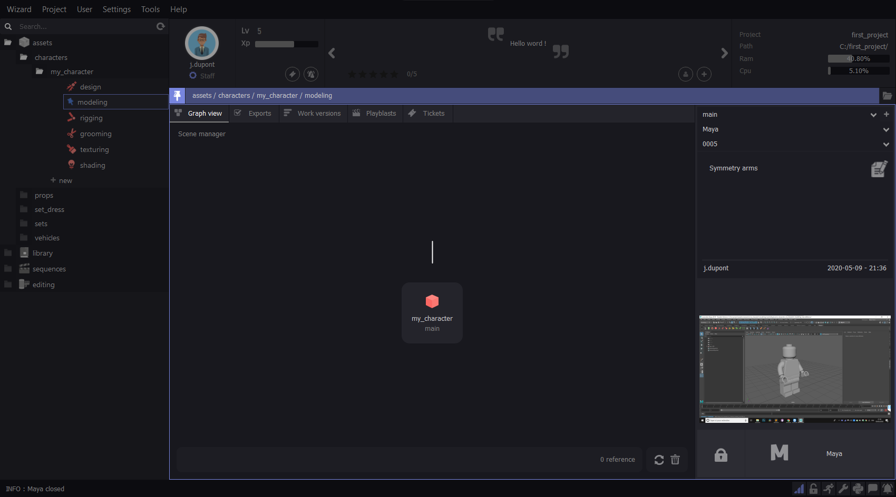{kind=link}
Node Graph¶
The Node Graph is a nodal representation of your work scene. Your work file is represented by a node relative to the stage of your scene: this is the main node of the Graph Node, separated from the other nodes. If your work scene is a modeling scene, it will be represented by a modeling node, etc… The other nodes are references of the scene.
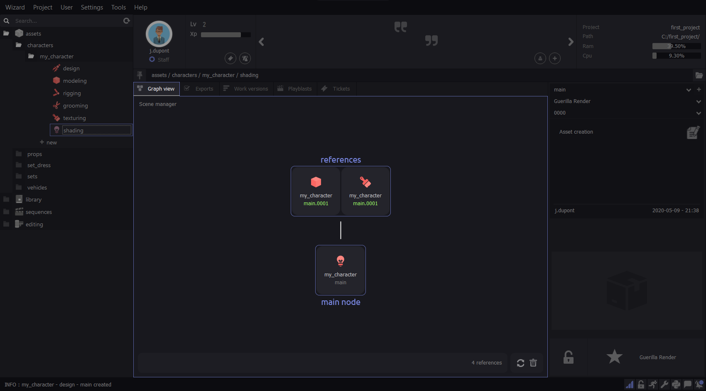{kind=link}
Exports¶
The Exports tab shows the Export manager which lists the export history of your scene. Using the Export manager you can comment or find any export.
Note
You can display more or less by clicking on the +3/-3 icon
Note
To comment or find an export use the comment icon and the folder icon on the right side of the Export manager.

Work versions¶
The Work Versions tab shows the Version Manager. It lists all the versions history of your scene. It shows the last 3 work versions, the user who created it and the comment. You can delete, comment or open any version using the icons on the right side.
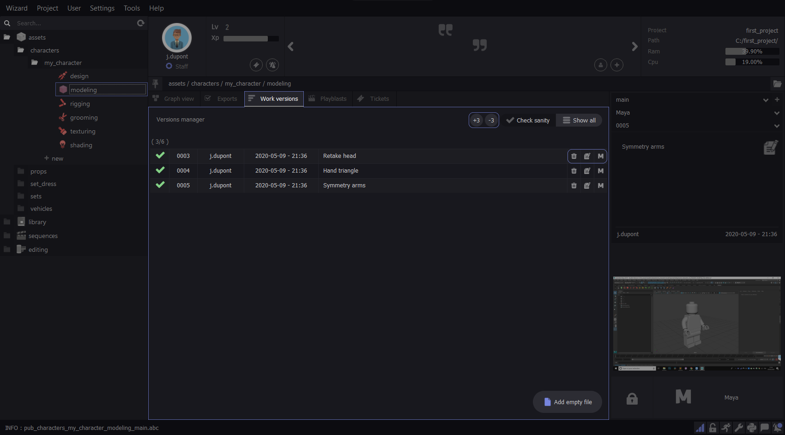{kind=link}
Note
You can display more or less by clicking on the +3/-3 icon
Note
To delete, comment or open any work version use the delete icon, comment icon or the concerned software icon.
Playblast¶
The Playblast manager lists the playblast history of your scene. It shows the last 3 versions of playblast, the user who created it and the comment.
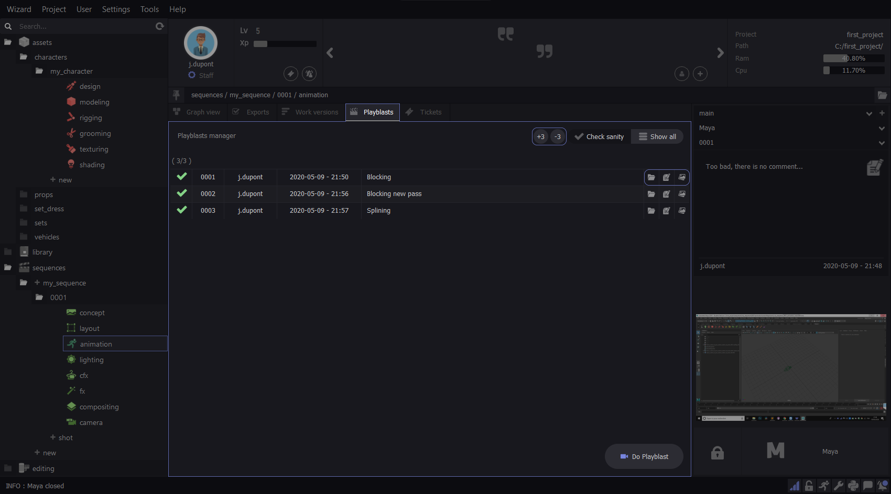{kind=link}
Note
You can display more or less by clicking on the +3/-3 icon
Note
To find, comment or read a playblast use the folder icon, comment icon and the read picture icon on the right side of the Playblast manager.
Tickets¶
The Ticket allows you to open a ticket on an asset. A ticket is a note that reveals a problem and justifies a retake. Click on the Open new ticket button, at the bottom left corner of the Tickets tab to create a new ticket. Choose the user concerned, or all the user connected to the project and create the ticket. Once opened on the asset, the concerned user(s) will receive a notification: the ticket will remain open until a user close it.
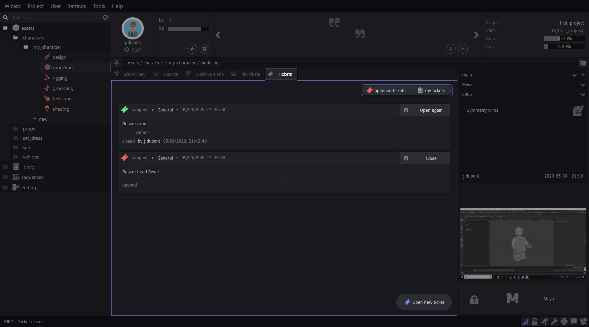{kind=link}
Note
You can display more or less ticket using the two button, opened tickets and my tickets, on the upper right corner of the Tickets. It will show you only your ticket(s) or the opened ticket(s).
Launcher¶
The Launcher is the area where you launch an asset. Select the variant and version of an asset and then the software you are working with before launching. This is also where you can comment your work and see your scene.

Note
The Launcher will always be set as the last user did it.
Variants¶
By default, each asset is created on a variant called main. This is the asset in its main variant. Variants are each of the differences represented by a replica of the main asset in its main variant. Variants simplify the integration of these differences in the pipeline of the concerned asset. You can create as many variants as the asset requires for your project. For example, variants are used in case of clothing changes for a character. As the below, with the winter_clothing variant. This example therefore implies a variant of the asset in the modeling, texturing, rig and shading stages to integrate these differences into your project. Another variant example: If the texturing of your asset changes, a variant in the texturing stage is necessary. Variants are also very useful to handle different characters based on the same 3D mesh, like crowd for example.

Softwares¶
The softwares menu of the launcher allows you to choose the software you want to use to work on the selected asset’s stage.
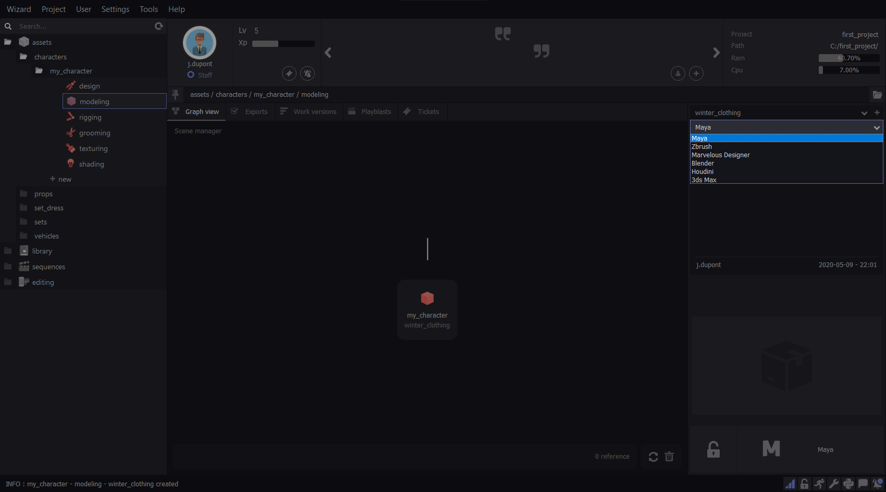{kind=link}
Versions¶
Versions of the asset (not to be confused with the variant of an asset) is the back-up history of your asset. By default, an asset is created in version 0000, each backup increments this number as follow: 0001, 0002, 0003, 0004, 005 etc…
A list containing these versions is available in the launcher and allows you to open any work version of your asset.
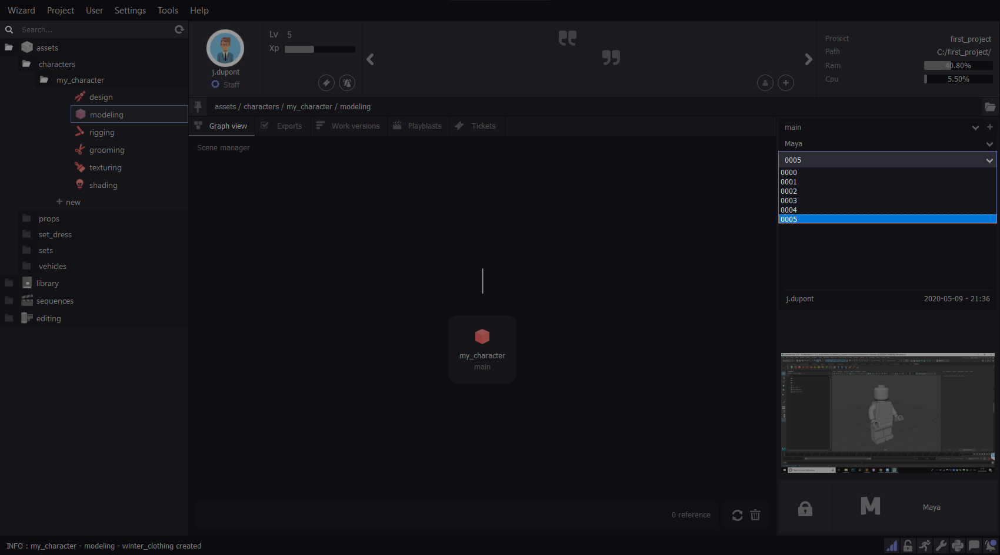{kind=link}
Comment¶
The Comment section of the Launcher allows you to comment each working version. Comments are very useful for the fabrication history of an asset. They are even more useful during a version back-up to know which version you want to back-up. Use the comments to document the history of your asset. Write in the text field and click the comment icon to post your comment.
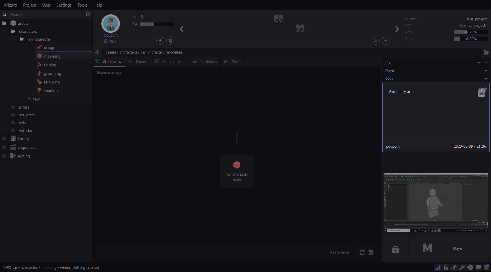{kind=link}
Screenshot¶
A screenshot of your work scene is done when you save your asset in a software, to be displayed in the launcher. It helps visualise your asset without opening it.
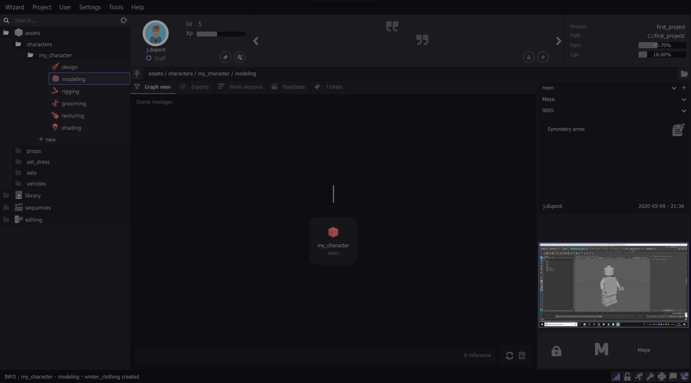{kind=link}
Note
Click on the screenshot to display it full size.
{kind=link}
Locker¶
The Locker is a function that locks an asset automatically when it is opened from Wizard. This function aims to secure the working scene so that each file is edited by one user at a time.

Once your work is complete, the asset remains locked and therefore unavailable to the rest of your team. Remember to unlock it by clicking on the locker icon.
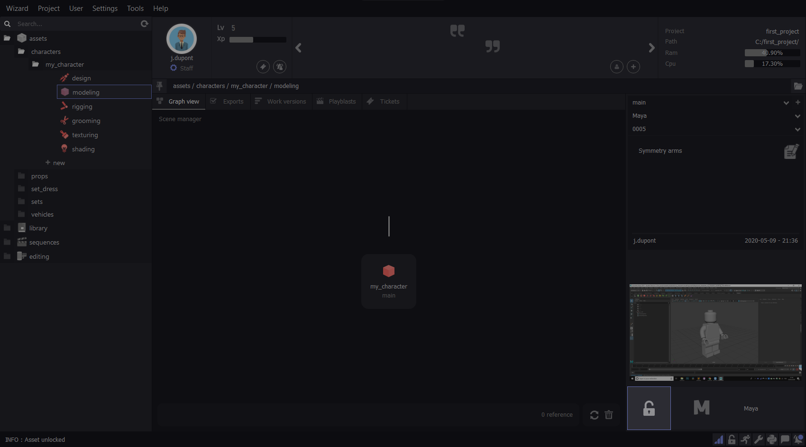{kind=link}
Note
If you are looking to unlock a working scene locked by an absent user that can’t do it itself, you can right click on the locker icon and select the Request email unlock request button. This function sends a code per email to the user who locked the scene. Get the code from this user and write it in the text box provided for this purpose so that wizard unlocks the scene. This process ensures that the user who owns the lock allows you access to the file.
{kind=link}
Launcher¶
The Launcher allows you to open your work scenes, it’s the only way to open your software and import the Wizard tools, environment variable and scripts setted in the Softwares settings. Running softwares from the launcher tells Wizard you are working under its management. The launcher opens the variant and its selected version, with the selected software.
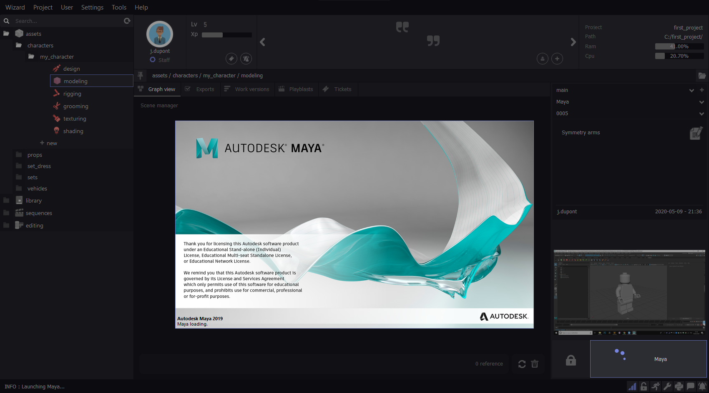{kind=link}
User infos¶
In this part of the UI you will find informations about your user : your user picture, your level and your Xps. Xps is earned by the work done on your software under the Wizard management. Levels are earned from Xps. This is also where the admin/staff status is mentioned, if you declared yourself as administrator when you created your user. You can also consult the tickets that are sent to you and the notifications you sent.
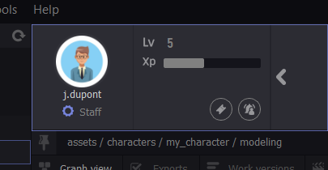{kind=link}
Note
Click on your profil picture to modify it.
Quotes & Jokes¶
This part of the Wizard UI allows users to add text that will be displayed randomly. Click the + button and add your message. You can also rate from 1 to 5 stars all messages except yours .
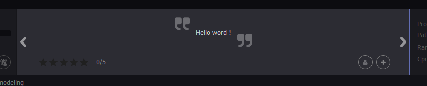{kind=link}
Project & Machine infos¶
This part of the Wizard UI shows you which project is connected to Wizard as well as its location. It also shows the Ram and GPU load of your machine in real time.
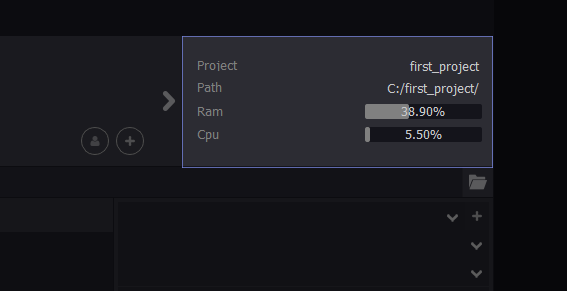{kind=link}
Extras¶
More tools are available from these icons at the bottom right of the Wizard interface.
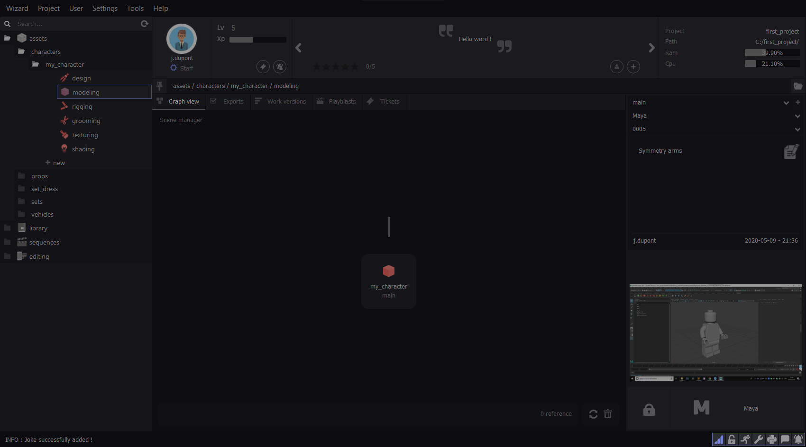{kind=link}
Notification Wall¶
The Notifications Wall gives you an overview of your project history through notifications.

Note
You can filter the history of the Notifications Wall with the upper buttons Create, Publish and Remove.
Chat¶
The chat is an internal communication system hosted on the Wizard server. You can send messages and pictures in real time with all users connected to the project.
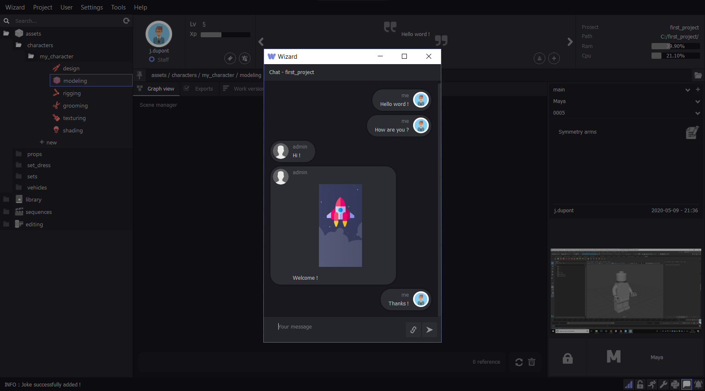{kind=link}
Wizard Log & Python Console¶
The Wizard Log print every command processing and done by Wizard. You can find it at the bottom left corner of the UI.
{kind=link}
The Wizard Python Console allows you to execute python commands. You can also have a look of the log here.
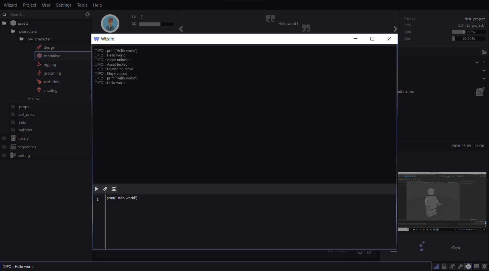{kind=link}
Note
If any error occurs while using Wizard, click on the mail icon in the console to send the Error Log to the Wizard support team.
{kind=link}
Note
While emailing the Wizard support you will received an automatic mail back. It mentioned that your message was successfully delivered and that the technical team is dealing with the problem.
Settings¶
This icon open the Wizard UI Setting that allows you to customize it. Turn off or change the notification sound, change the theme of the UI and many more.
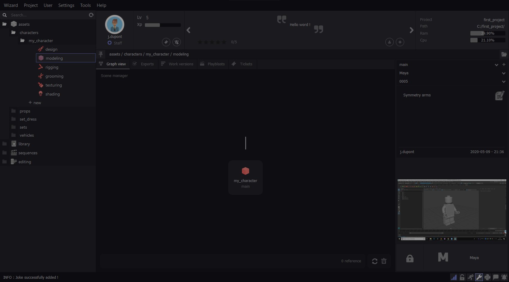{kind=link}
Locked Asset¶
This button allows you to see the number of assets locked by your user and unlock them in one click. To allow other users to open any work scene of the project when you are not working, it’s strongly recommended to unlock your assets through this button, before quitting your Wizard session.
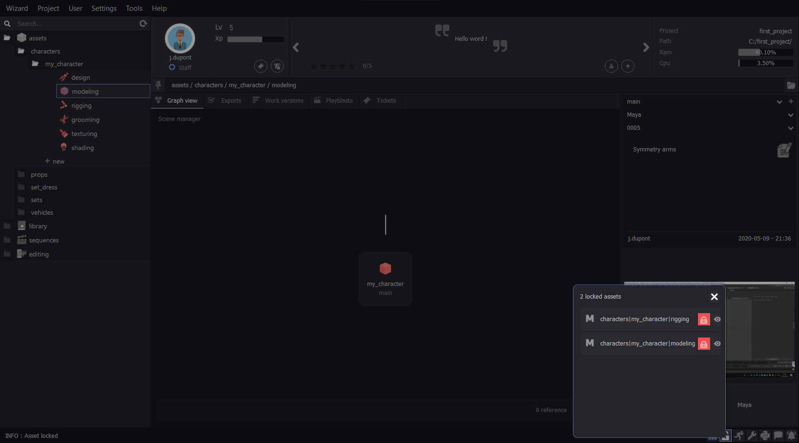{kind=link}
Running Asset¶
This button allows you to see the number of assets in work if you have multiples opened scenes.
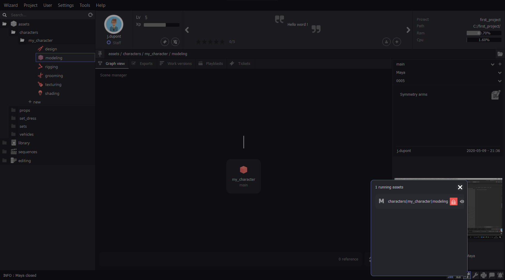{kind=link}
Server¶
Wizard is automaticaly running a server when you launch it. This icon is blue while Wizard is connected to it. The server allows multiple connected users to work together on a project, all the communication tools needs the server to be connected.